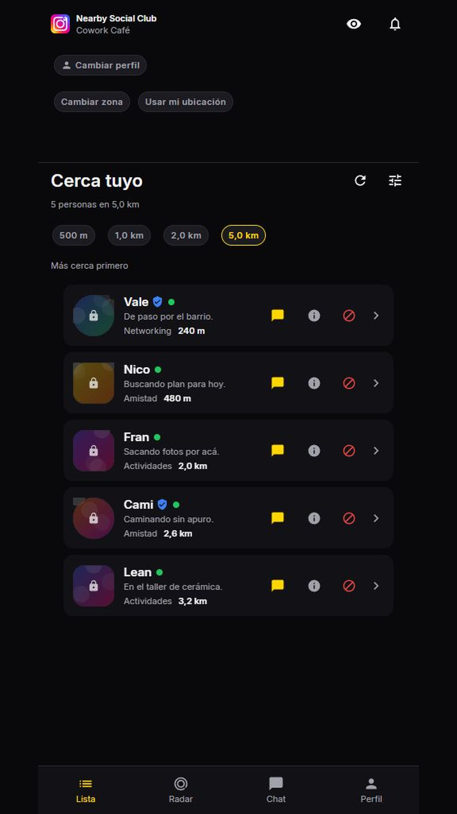
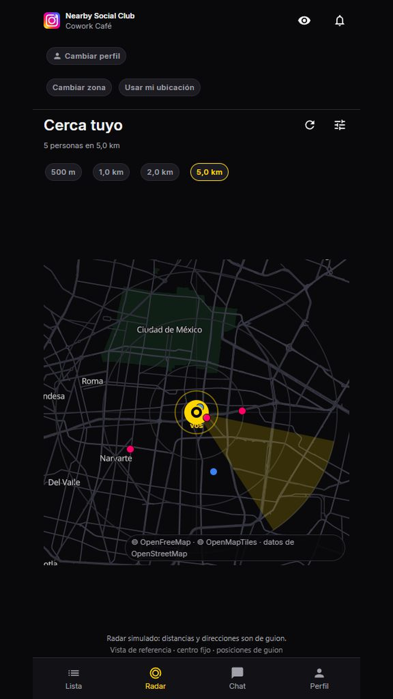

Cerca tuyo
5 personas
en 5,0 km
Ordenadas por distancia real, no por un algoritmo.
500 m
1,0 km
2,0 km
5,0 km

240 m
Vale · en línea ahora
Distancias reales,
no perfiles de
catálogo
Nearby Social Club
nearbyig.tech